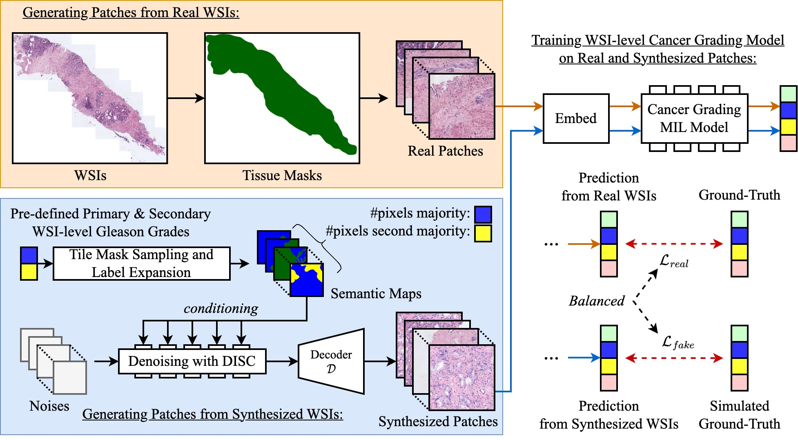
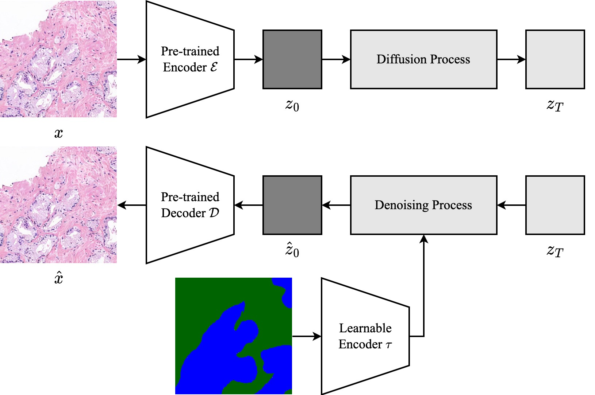
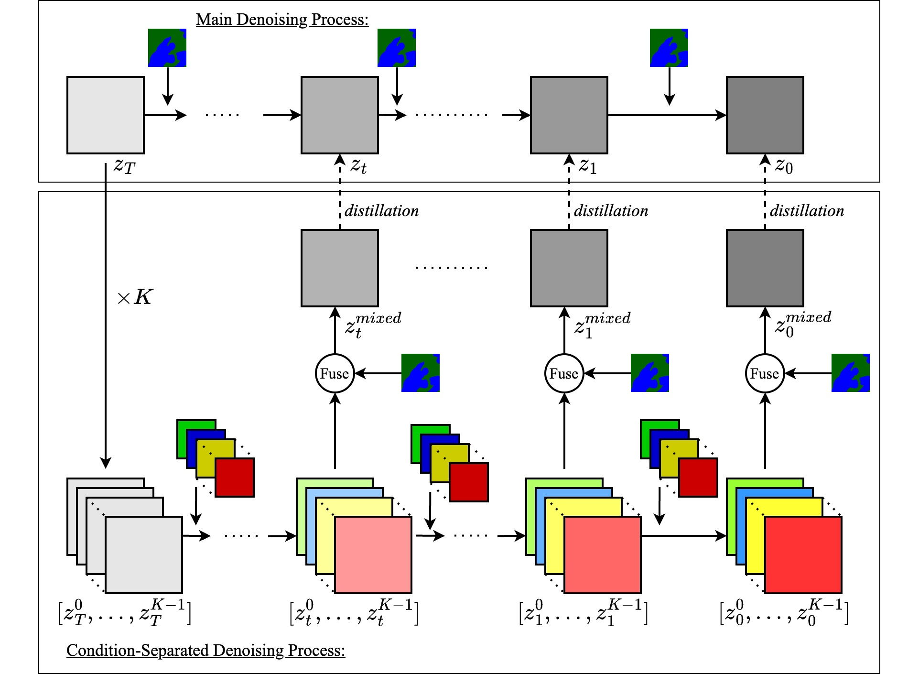
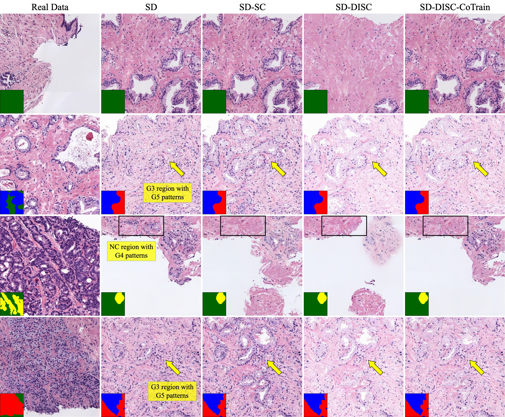
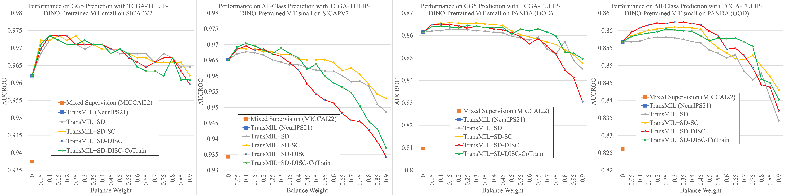

DISC: Latent Diffusion Models with Self-Distillation from Separated Conditions for Prostate Cancer Grading
| Man M. Ho1 | Elham Ghelichkhan1 | Yosep Chong2,4 | Yufei Zhou3 | Beatrice Knudsen4,5 | Tolga Tasdizen1,6 |
|
1 Scientific Computing and Imaging Institute, University of Utah, Utah, USA |
| [Paper] |
Abstract accepted for ISBI 2024.
Extended version to be presented at SynData4CV @ CVPR 2024.

Abstract
Latent Diffusion Models (LDMs) can generate high-fidelity images from noise, offering a promising approach for augmenting histopathology images for training cancer grading models. While previous works successfully generated high-fidelity histopathology images using LDMs, the generation of image tiles to improve prostate cancer grading has not yet been explored. Additionally, LDMs face challenges in accurately generating admixtures of multiple cancer grades in a tile when conditioned by a tile mask. In this study, we train specific LDMs to generate synthetic tiles that contain multiple Gleason Grades (GGs) by leveraging pixel-wise annotations in input tiles. We introduce a novel framework named Self-Distillation from Separated Conditions (DISC) that generates GG patterns guided by GG masks. Finally, we deploy a training framework for pixel-level and slide-level prostate cancer grading, where synthetic tiles are effectively utilized to improve the cancer grading performance of existing models. As a result, this work surpasses previous works in two domains: (1) our LDMs enhanced with DISC produce more accurate tiles in terms of GG patterns, and (2) our training scheme, incorporating synthetic data, significantly improves the generalization of the baseline model for prostate cancer grading, particularly in challenging cases of rare GG5, demonstrating the potential of generative models to enhance cancer grading when data is limited.
Overview
Figure: Besides the real patches (top-left) for training pixel-level and slide-level Gleason grading models (right), we introduce Latent Diffusion Models (LDMs) with Self-Distillation from Separated Conditions (DISC) to accurately generate admixtures of multiple Gleason Grades in a tile when conditioned by a tile mask (bottom-left).
Defining Tile Mask Shapes and Sampling A Bag of Tile Masks

We preprocess human-annotated masks in SICAPv2, converting them to prepared masks with labels mapped to their frequency distribution (semantic information removed). To generate patches from a synthetic WSI indicating a primary GG, we randomly choose a secondary GG and introduce non-overlapped random selection by setting random weights for all labels to control pseudo labels assigned to the patches.
Latent Diffusion Models conditioned by Tile Mask
Latent Diffusion Models (Stable Diffusion) conditioned by guided masks with multiple Gleason Grades (GGs)
Denoising with Self-Distillation from Separated Conditions (DISC)
We introduce Self-Distillation from Separated Conditions (DISC) to improve image synthesis accuracy. Instead of using the initial complex guided mask with multiple Gleason Grades (GGs) (top), we generate separate latent features with distinct labels, which are fused with the mask in the final step for robust patterns. However, this approach incurs a computational cost of K times, the number of labels. To address this, we train the main process to distill information from fused latent features obtained from the Condition-Separated Denoising Process (bottom).
Improving Stable Diffusion (SD)

Figure: A qualitative comparison between Stable Diffusion (SD) and our proposed technique, SD with Self-Distillation from Separated Conditions (DISC), for histopathology image synthesis. This work yields higher-confidence label patterns compared to SD. Notably, SD tends to generate fused glands representing GG4 for Non-Cancer regions (highlighted rectangles) and sheets of cells representing GG5 for GG3-indicated regions (indicated by yellow arrows). Labels: Non-Cancer, GG3, GG4, GG5.
Improving Pixel-Level Cancer Grading Models (CarcinoNet)

Figure: Qualitative comparison between Carcino-Net and itself trained with our techniques.
Improving MIL-based Cancer Grading Models (TransMIL)

Charts: A quantitative comparison among TransMIL, Mixed Supervision, and TransMIL jointly trained with tiles generated by our models with a balance weight λ ∈ [0.0, 0.9] in AUCROC. The feature representation extractor used is ViT-small (patch of 16) pre-trained on histopathology images with DINO. All models are trained on the SICAPv2 and evaluated on both in-distribution SICAPv2 and Out-Of-Distribution (OOD) PANDA. Our generated data consistently improves cancer grading performance with higher AUCROC. Please check our Supplemental Document for more results including the feature representation extractors ResNet50 pre-trained on ImageNet and histopathology images with MoCov2.
If you find our work useful, please consider citing
@misc{ho2024disc,
title={DISC: Latent Diffusion Models with Self-Distillation from Separated Conditions for Prostate Cancer Grading},
author={Man M. Ho and Elham Ghelichkhan and Yosep Chong and Yufei Zhou and Beatrice Knudsen and Tolga Tasdizen},
year={2024},
eprint={2404.13097},
archivePrefix={arXiv},
primaryClass={eess.IV}
}
License
This work, including the trained models, code, and dataset, is for non-commercial uses and research purposes only.
References
[Stable Diffusion]: Rombach, Robin, Andreas Blattmann, Dominik Lorenz, Patrick Esser, and Björn Ommer. "High-resolution image synthesis with latent diffusion models." In Proceedings of the IEEE/CVF conference on computer vision and pattern recognition, pp. 10684-10695. 2022.
[CarcinoNet]: Lokhande, Avinash, Saikiran Bonthu, and Nitin Singhal. "Carcino-Net: A deep learning framework for automated Gleason grading of prostate biopsies." In 2020 42nd Annual International Conference of the IEEE Engineering in Medicine & Biology Society (EMBC), pp. 1380-1383. IEEE, 2020.
[TransMIL]: Shao, Zhuchen, Hao Bian, Yang Chen, Yifeng Wang, Jian Zhang, and Xiangyang Ji. "Transmil: Transformer based correlated multiple instance learning for whole slide image classification." Advances in neural information processing systems 34 (2021): 2136-2147.
[Mixed Supervision]: Bian, Hao, Zhuchen Shao, Yang Chen, Yifeng Wang, Haoqian Wang, Jian Zhang, and Yongbing Zhang. "Multiple instance learning with mixed supervision in gleason grading." In International Conference on Medical Image Computing and Computer-Assisted Intervention, pp. 204-213. Cham: Springer Nature Switzerland, 2022.
Acknowledgements
We acknowledge the generous support from the Department of Defense Prostate Cancer Program Population Science Award (grant number W81XWH-21-0725); and also, the VA Merit Award (grant number 1 I01 CX002622-01). We also thank Dr. Akadiusz Gertych for the dataset from Cedars-Sinai Hospital in Los Angeles.